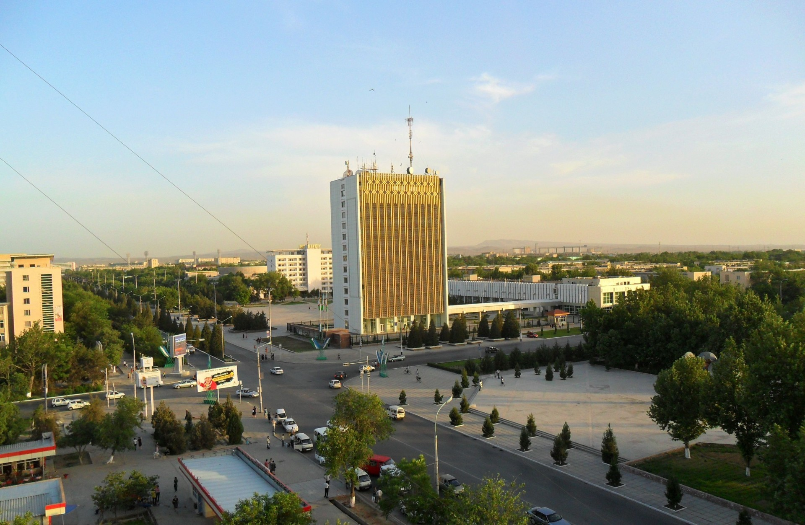
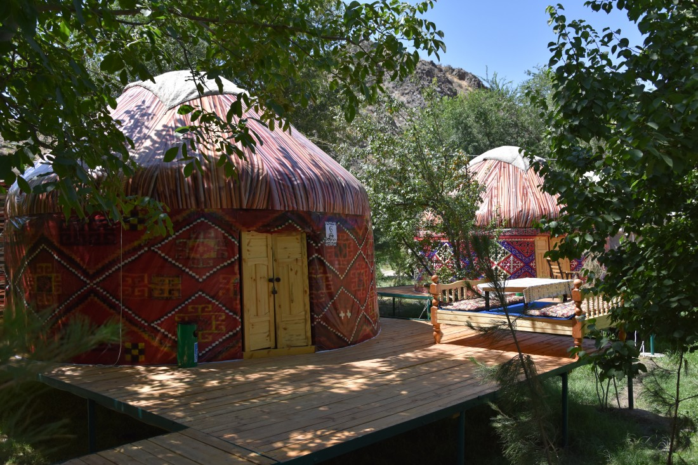
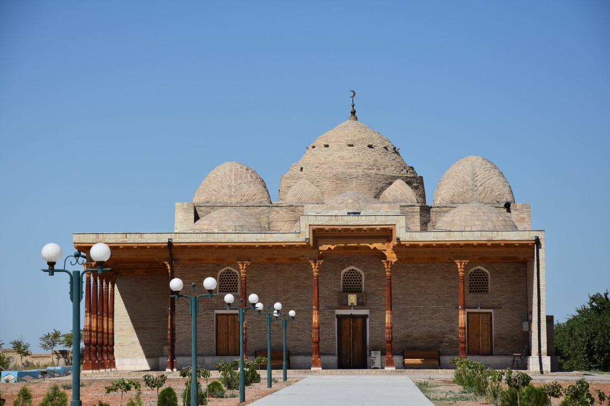

Навои - Солнечный край
Фотогалерея
Климат
Климат в Навои сухой и с четко выраженной сезонностью. Летом очень жарко, так что не пренебрегайте головным убором и не забывайте пить много воды. Зима обычно холодная и не снежная. Температура часто падает ниже 0°C, но из-за низкой влажности.
Подарки и сувениры
Поскольку Навои по большей части создавался как промышленный город, в нем не так много сувенирных лавок. Но без подарков вы не уедете! В городе можно встретить лавки ремесленников практически во всех местах, где есть достопримечательности. Самые популярные сувениры в городе — это магнитики с изображением города. Также можно найти национальную, со своими отличительными чертами, одежду характерную для региона и конечно же горы сухофруктов!
Кухня
Узбекистан – это центр мясной кухни мира! В каждом городе одни и те же блюда готовят по-разному и поэтому только проехав по всем города страны Вы сможете точно сказать, где кухня вкуснее всех. Не исключение в этом списке и Навои. Визитной карточкой каждого города является плов! В Навои его готовят со специальным рисом называемый девзира. Этот рис считается самым вкусным и дорогим в Узбекистане. Он имеет красно-коричневый оттенок, а после готовки увеличивается в 7 раз! Чтобы дойти до кондиции его выдерживают, как хорошее вино, в течении пары - тройки лет. Только тогда он доходит до пика своего вкуса и приобретает особый запах. Затем в плов добавляют баранину, желтую морковь, чеснок и дунганский перец. Вкус у этого блюда незабываемый! Среди основных блюд также можно выделить дымляму, манты, шурва и конечно шашлык. Еще больше про Узбекскую Кухню Вы сможете прочитать по этой ссылке.
История
Город Навои был возведен относительно не давно, в 1960 году, что дает ему статус самого молодого города в стране. Расположился он примерно в 360 километрах от Ташкента, на берегу реки Заравшан. Его создавали как центр горнодобывающей промышленности, так как в его окрестностях нашли драгоценные металлы и уран. Назвали город в честь знаменитого на весь мир ученого, поэта и государственного деятеля – Алишера Навои. Несмотря на то что город новый, история местности, которая его окружает имеет длинную и богатую историю. Археологи находили на этой территории множество предметов, связанных с культурой древних бактрийцев, хорезмийцев и саков. Не далеко от города, всего в 45 км, находится ущелье Сармыш. Это по истине легендарное место! На территории всего в 2 км. находится около 4000 петроглифов, среди которых изображения древних людей и сцены охоты.
